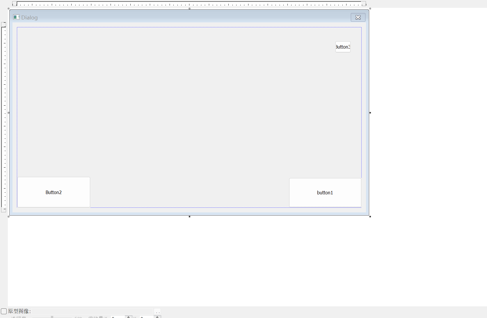

Windows-API-程序设计(3)
系统学习Windows API 3
在QT中，我们已经看到了生成一个对话框是容易的——但是现在，让我们把目光聚焦在基于Windows API的MFC下如何召唤一个对话框。
跟QT类似的——我们找到资源文件 》添加新建项 》 对话框，添加即可。
我们随后设计也界面

随便整点。
现在看看你的resource.h，多了四个宏：
//{{NO_DEPENDENCIES}}
// Microsoft Visual C++ 生成的包含文件。
// 供 Project2.rc 使用
//
#define IDD_DIALOG1 101
#define IDC_BUTTON1 1001
#define IDC_BUTTON2 1002
#define IDC_BUTTON3 1003 他们是我们操作之的接口。
下面开始写主函数的代码：
int APIENTRY WinMain(_In_ HINSTANCE hInstance,
_In_opt_ HINSTANCE hPrevInstance,
_In_ LPSTR lpCmdLine,
_In_ int nShowCmd)
{
DialogBox(hInstance, MAKEINTRESOURCE(IDD_DIALOG1), NULL, MainDlgProc);
}APIEntry:
APIENTRY 系统函数的调用约定。
此类型在 WinDef.h 中声明，如下所示：
#define APIENTRY WINAPI 也就是说，它本质上时WINAPI的重定义与重命名。
DialogBox
从对话框模板资源创建模式对话框。 在指定的回调函数通过调用 EndDialog 函数终止模式对话框之前，DialogBox 不会返回控件。
语法
void DialogBoxA(
[in, optional] hInstance,
[in] lpTemplate,
[in, optional] hWndParent,
[in, optional] lpDialogFunc
);参数
[in, optional] hInstance类型： HINSTANCE
包含对话框模板的模块的句柄。 如果此参数为 NULL，则使用当前可执行文件。
[in] lpTemplate类型： LPCTSTR
对话框模板。 此参数是指向指定对话框模板名称的以空字符结尾的字符串的指针，或者是指定对话框模板的资源标识符的整数值。 如果参数指定了资源标识符，则其高位字必须为零，其低位字必须包含该标识符。 你可以使用 MAKEINTRESOURCE 宏来创建此值。
[in, optional] hWndParent类型：HWND
拥有对话框的窗口的句柄。
[in, optional] lpDialogFunc类型： DLGPROC
指向对话框过程的指针。 有关对话框过程的详细信息，请参阅 DialogProc。
备注
DialogBox 宏使用 CreateWindowEx 函数创建对话框。 然后，如果模板指定对话框过程DS_SETFONT或DS_SHELLFONT样式) ，则 DialogBox 会发送WM_INITDIALOG消息 (和WM_SETFONT消息。 该函数显示对话框 (，无论模板是否指定 WS_VISIBLE 样式) ，禁用所有者窗口，并启动其自己的消息循环来检索和调度对话框的消息。
当对话框过程调用 EndDialog 函数时，DialogBox 将销毁对话框，结束消息循环，如果以前启用) ，则启用所有者窗口 (，并在调用 EndDialog 时返回对话框过程指定的 nResult 参数。
MAKEINTERSOURCE
VC的定义是(winuser.h):
#define MAKEINTRESOURCEA(i) ([LPSTR](https://baike.baidu.com/item/LPSTR/9782867?fromModule=lemma_inlink))((ULONG_PTR)((WORD)(i)))
#define MAKEINTRESOURCEW(i) (LPWSTR)((ULONG_PTR)((WORD)(i)))
#define MAKEINTRESOURCE MAKEINTRESOURCEW
#else
#define MAKEINTRESOURCE MAKEINTRESOURCEA
[#endif](https://baike.baidu.com/item/%23endif/2834688?fromModule=lemma_inlink) // 用这个宏的主要原因是有的资源是用序号定义的,而不是字符串.所以要把数字转换成字符串指针,然后再传递给LoadResource之类的函数,这样才加载了资源.
要释放资源(用LoadResource加载的)可以调用FreeResource函数把LoadResource返回的指针传递给FreeResource.
作用
是把一个”数字形ID”,转化为”字符串”.但是执行前后,输入的数据的内容和长度是不变的!它只不过就是C语言里面”强制类型转换“而已.
请看 Winuser.h 代码:
#define MAKEINTRESOURCEA(i) ([LPSTR](https://baike.baidu.com/item/LPSTR/9782867?fromModule=lemma_inlink))(([DWORD](https://baike.baidu.com/item/DWORD/5043783?fromModule=lemma_inlink))((WORD)(i)))
#define MAKEINTRESOURCEW(i) (LPWSTR)((DWORD)((WORD)(i)))
#define MAKEINTRESOURCE MAKEINTRESOURCEW
#else
#define MAKEINTRESOURCE MAKEINTRESOURCEA
[#endif](https://baike.baidu.com/item/%23endif/2834688?fromModule=lemma_inlink) // 的用法.就用FindResource来说明.
HRSRC FindResource(
HMODULE hModule, // module handle
LPCTSTR lpName, // resource name
LPCTSTR lpType // resource type
); 就是lpName参数需要使用MAKEINTRESOURCE ,因为它需要LPCTSTR类型的参数输入.那么,情况就很清楚了.凡涉及”资源”的API或者MFC类,在参数类型为LPCTSTR时,就应该使用 MAKEINTRESOURCE.这是针对”资源名字”为”数字类型”时的情况.
#include<iostream>
#include<Windows.h>
#include"resource.h"
INT_PTR CALLBACK MainDlgProc(HWND hDlg, UINT uMsg, WPARAM wParam, LPARAM lParam) {
BOOL bRet = TRUE;
int usrChoice;
switch (uMsg)
{
case WM_LBUTTONDOWN:
MessageBox(hDlg, L"Hello!", L"A Greeting", MB_OK);
case WM_COMMAND:
switch (LOWORD(wParam)) {
case IDC_BUTTON1:
usrChoice = MessageBox(hDlg, L"I convinced that you push the button1", L"A greeting", MB_OK);
if (usrChoice == MB_OK) {
bRet = FALSE;
break;
}
break;
case IDC_BUTTON2:
usrChoice = MessageBox(hDlg, L"I convinced that you push the button2", L"A greeting", MB_OK);
if (usrChoice == MB_OK) {
bRet = FALSE;
break;
}
break;
case IDC_BUTTON3:
EndDialog(hDlg, 0);
bRet = FALSE;
break;
default:
bRet = FALSE;
break;
}
break;
default:
bRet = FALSE;
break;
}
return bRet;
}
int APIENTRY WinMain(_In_ HINSTANCE hInstance,
_In_opt_ HINSTANCE hPrevInstance,
_In_ LPSTR lpCmdLine,
_In_ int nShowCmd)
{
DialogBox(hInstance, MAKEINTRESOURCE(IDD_DIALOG1), NULL, MainDlgProc);
} 这个demo生成一个有趣的对话框，可以试试看。